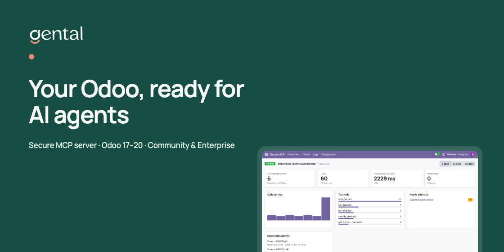
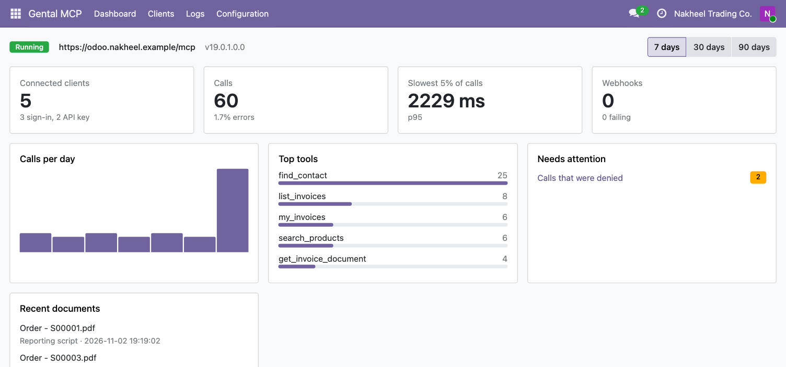
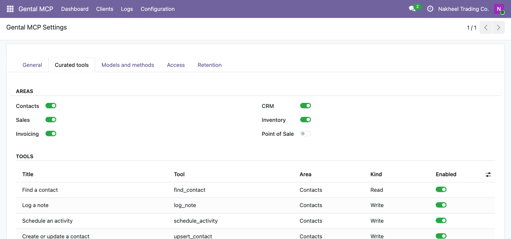
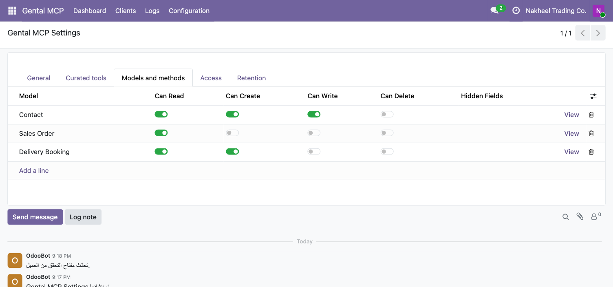
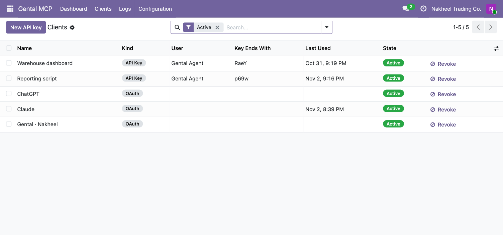
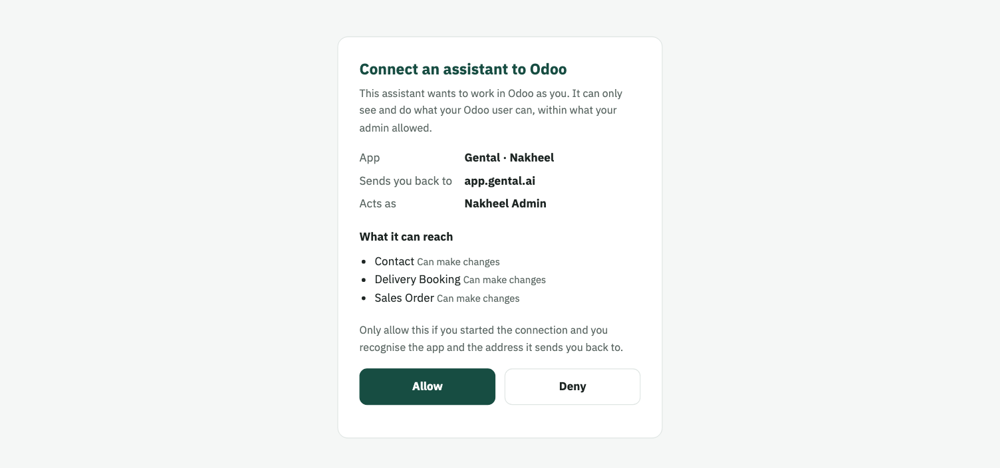
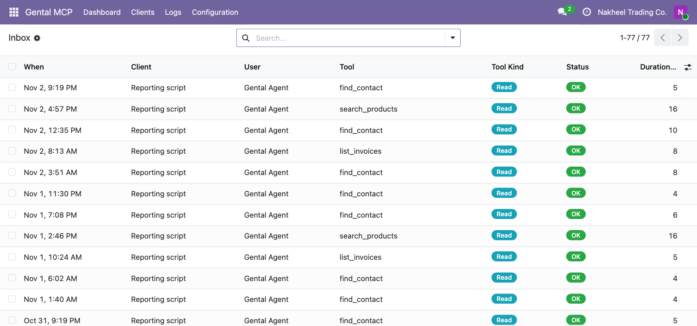
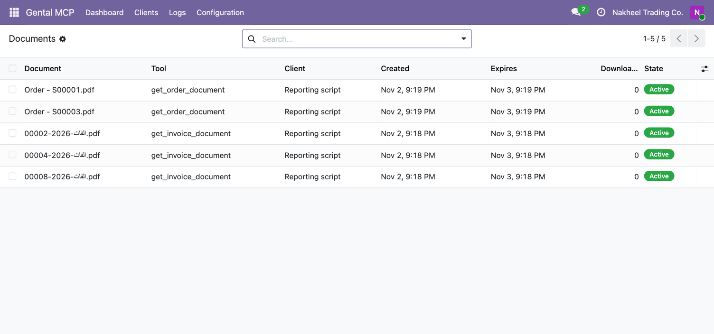

Turn your Odoo into a secure MCP server for AI agents.
Your agent finds contacts, prices quotations, checks stock, shares invoices and logs notes, as an Odoo user you choose and only within what you expose. Free and open source (LGPL-3), by ignteQ, the team behind Gental.

Any client that speaks the Model Context Protocol over HTTP can connect to https://your-odoo/mcp.
The fullest experience. With Gental, your agent can also:
Add the MCP URL as a custom connector and sign in with your Odoo login. Every curated and generic tool works the same way.
Scripts and tools without OAuth can use an API key instead.
Every call must pass all three. A call stopped by any wall returns an error, not data, and is logged.
WALL 1
Nothing is reachable until you switch it on: curated tools per app, and for each model the operations, methods and hidden fields you choose.
WALL 2
Only members of the "Gental MCP: Connect" group can sign in a client. Remove someone from the group and their tokens stop working at once.
WALL 3
Every call runs as the signed-in Odoo user, so their access rights and record rules apply. Business data is never read as the superuser.
Curated tools appear only when their Odoo app is installed and you turn that area on. Prices always come from Odoo: no tool accepts a price, discount or total from the agent. Tools marked "verified customer" act only for the customer proved by a signed identity, with Gental.
| App | Tool | What it does | Kind |
|---|---|---|---|
| Contacts | find_contact | Find a contact by name, phone, email or reference | Read |
upsert_contact | Create or update a contact by phone or email, without duplicates | Write | |
log_note | Add a note to a contact, lead or order | Write | |
schedule_activity | Schedule a call or to-do for a colleague, with a deadline | Write | |
| Sales | search_products | Find products with their price, and stock when Inventory is installed | Read |
preview_quotation | Price lines for a customer: taxes and total, before anything is written | Read | |
create_quotation | Create the quotation, re-priced by Odoo | Write | |
confirm_order | Confirm a draft quotation | Write | |
cancel_order | Cancel an order | Destructive | |
order_status | Status of an order by its reference | Read | |
my_orders | The customer's own orders (verified customer) | Read | |
get_order_document | Quotation or order PDF as a signed link | Read | |
my_order_document | The customer's own quotation or order PDF (verified customer) | Read | |
| Invoicing | list_invoices | List invoices by customer, state, dates or overdue | Read |
invoice_details | Lines, amount paid and open, due date | Read | |
customer_balance | Receivable and overdue totals for a customer | Read | |
my_invoices | The customer's own invoices (verified customer) | Read | |
my_balance | The customer's own balance (verified customer) | Read | |
get_invoice_document | Invoice PDF as a signed link | Read | |
my_invoice_document | The customer's own invoice PDF (verified customer) | Read | |
send_invoice | Email the invoice to the customer through Odoo | Write | |
| CRM | create_lead | Create a lead | Write |
update_lead | Change a lead's stage, owner, expected revenue or tags | Write | |
pipeline_summary | The pipeline per stage and per salesperson | Read | |
| Inventory | stock_availability | Stock per product and warehouse, with the forecast | Read |
delivery_status | Deliveries of an order: state and tracking reference | Read | |
my_deliveries | The customer's own deliveries (verified customer) | Read | |
get_delivery_document | Delivery slip PDF as a signed link | Read | |
| Point of Sale | pos_sales_summary | Sales for today, a session or a date range, per shop | Read |
find_pos_order | Find a sale by its receipt number | Read |
For anything the curated tools don't cover, expose any model, including your own custom modules. For each model you choose read, create, update and delete separately, allow specific public methods (each marked read, write or destructive), hide fields, and add an extra filter on top of the record rules.
The agent gets seven tools: odoo_search, odoo_read, odoo_describe_model, odoo_create, odoo_update, odoo_delete and odoo_call_method. Passwords, tokens, secret-like fields and binary fields are never returned.
Quotation, order, invoice and delivery slip PDFs are rendered by Odoo as the acting user, kept in Logs › Outbox › Documents, and shared as a signed link that expires (24 hours by default, adjustable). Expired files are cleaned up automatically.
Send Odoo events to any https address: invoice posted or paid, order created, confirmed or cancelled, delivery done, lead created or moved, contact created, and record created or updated on any exposed model. Each delivery is signed with your secret and retried with backoff if the receiver is down.

The dashboard: connected clients, calls per day, slowest calls, top tools and what needs attention.

Curated tools: turn each app area and each tool on or off.

Models and methods: choose which models the agent can read, create, write or delete, and hide fields.

Clients: every connected app and API key, the user it acts as, and a one-click revoke.

The consent page after signing in with your Odoo login: which app, where it sends you back, and who it acts as.

The Inbox: every call with its client, user, tool, result and duration.

Outbox › Documents: generated PDFs, who asked for them, when the link expires and how often it was opened.
proxy_mode on.https://your-odoo/mcp, sign in as the Gental Agent user and approve.No. Odoo Online doesn't allow custom modules. It works on Odoo Community or Enterprise on your own server, and on Odoo.sh.
Clients need to reach Odoo over the internet, so you need a public https address, for example through a reverse proxy.
It stays in your Odoo. The module runs inside your database, and a client sees only what you expose, within the rights of the user it acts as.
The module is free and open source under LGPL-3.
Yes. The module's screens and messages ship in Arabic and English, and the consent page follows the user's language.
Write to us at hello@gental.ai. We read every message.